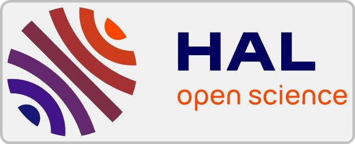

This page contains the list of all the publications that I (co-)authored during my academic career.
Even if it is supposed to, this page may not be up-to-date at the time you read it, so please feel free to visit my dblp page and/or my
Google Scholar page.
International conferences
- Automated Generation of BPMN Processes from Textual Requirements. Quentin Nivon, Gwen Salaün, Proc. of ICSOC'24, December 2024, Tunis, Tunisia. (in press)
- Semi-Automated Refactoring of BPMN Processes. Quentin Nivon, Gwen Salaün, Proc. of QRS'24, July 2024, Cambridge, England. 
- Automated Repair of Violated Eventually Properties in Concurrent Programs. Irman Faqrizal, Quentin Nivon, Gwen Salaün, Proc. of FormaliSE'24, April 2024, Lisbon, Portugal.
- Refactoring of Multi-Instance BPMN Processes with Time and Resources. Quentin Nivon, Gwen Salaün, Proc. of SEFM'23, November 2023, Eindhoven, the Netherlands.
- Debugging of BPMN Processes Using Coloring Techniques. Quentin Nivon, Gwen Salaün, Proc. of FACS'22, November 2022, Oslo, Norway (online).